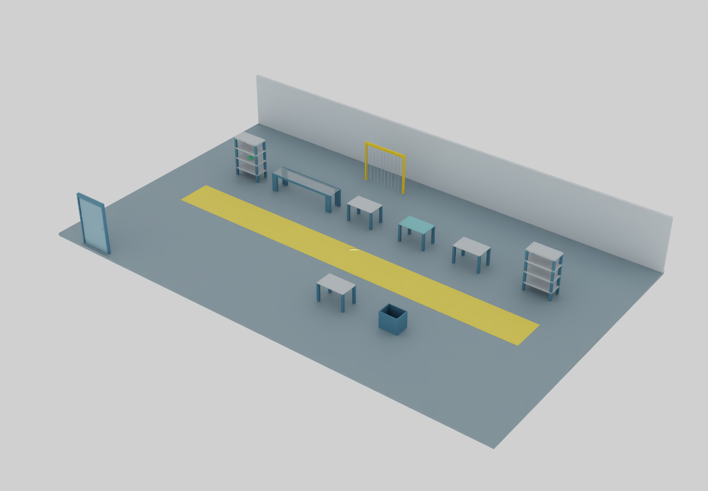

이번 ASSET_READY는 자체 설계 기준 레이아웃 범위입니다. 실측 완제품·물리 동역학·안전 인증·PLC REAL 완료가 아닙니다. 임의의 크기를 제조사 실측값으로 표시하지 않습니다.
최신: 724종 고정 · 666종 USD 연결 / BLOCKED 58종 · 기존 카탈로그 · 설계·QA 문서 · 724종 전체 데이터 · 핵심 USD 패키지
첫 핵심 세트 · 수동 조립 기준 공장

RTX 상세 이미지5개 공통 베이스 → 10종 → 13개 배치. 바닥·벽·문·통로·울타리·작업대·랙·롤러·검사대·스크랩함.
작업물 경로 · 저장된 검증 이벤트
입고 → 이송 → 수동 조립 → 검사 → 포장 → 출하
검사 분기 → 재작업 → 재검사 / 폐기
불러오는 중
SIMULATED_OPERATOR_TRANSFER_KINEMATIC. 이 화면은 저장된 이벤트 재생이며 실시간 RTX/장비 신호가 아닙니다. 장비 간 빈 공간은 작업자 인계로 가정합니다.배치·19개 이벤트·저장복원 증거 · USD 구조 증거
도움말 · 화면 설계 · QA · 다음 업무
업무 길잡이: 카탈로그 → USD → 크기·단위 → 바닥·방향 → 공정·물류 → 증거 검사 → 기준 레이아웃 배치.
USD 또는 기준 설계 해시가 바뀌면 기존 승인 근거를 재사용하지 않습니다. 하위 부품은 구성요소, 조합 레시피는 규칙이며 독립 종수에 추가하지 않습니다.
다음 바위
REAL 별도: UNBOUND → BOUND → READ_VERIFIED → REAL. 전체 724종 UNBOUND, PLC 쓰기 0건.